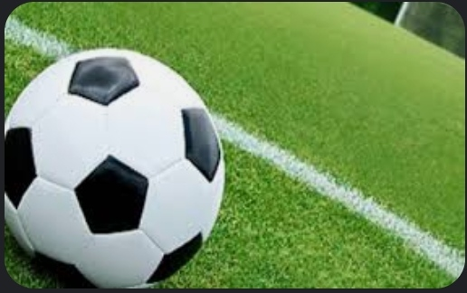
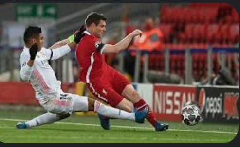
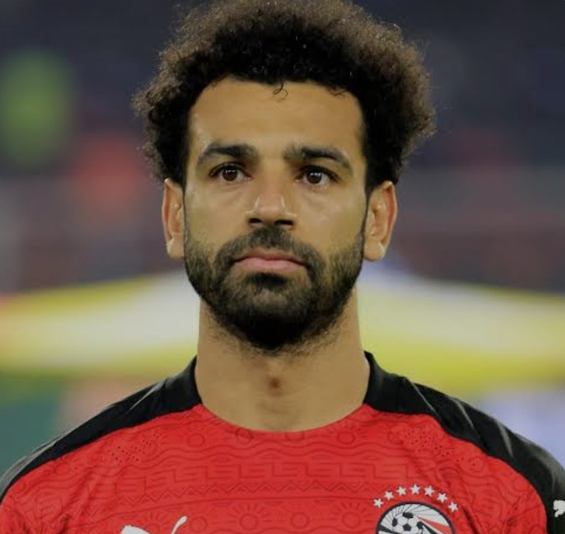
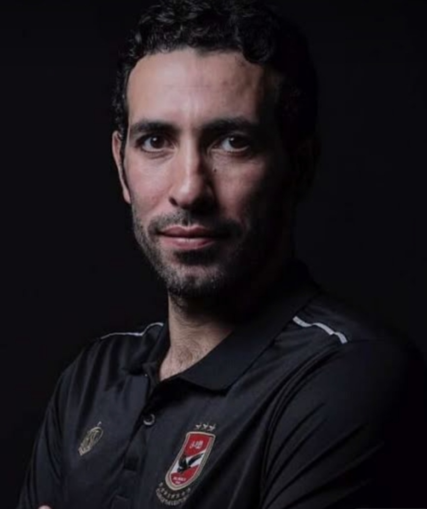

Football is the sport that attracts all children in this young age. The more we practice, the more we can refine our skills and knowledge our level in that game.
| Football is an intense team sport that imposes significant changes in your personality after each match or during training. Players interact with each other to communicate mentally or physically that helps them develop themselves . So, in addition to the title of quality, speed and relaxation, there is mental and psychological side. |  | Football is useful for the heart. Football requires a lot of physicality and allows the development of the heart muscle and with repeated efforts, the force will gain and work longer without failure. As a result, your heart rate will slow, your blood pressure will decrease, and your heart will become healthier. You can finally climb the stairs without getting breathless. So I love to exercise it to get good health help me fight aging . | |
| In the sport of football, we find a competitive spirit that all team members have. Soccer requires the idealistic mentality, respectful of communication and collective spirit, which helps the success of any team even if it competes against a huge team with the best and most famous players. | Football is the sport that attracts all children in this young age. The more we practice, the more we can refine our skills and knowledge our level in that game. Many of us like to be goalkeeper, striker or defender. In this small age we have a lot that we do not know about ourselves and recognize it through the practice of this wonderful sport and we have a lot that we also gain. |  | |
| Mohamed Salah is an Egyptian international football player who plays in the center of the right wing with Liverpool and Egypt. He is one of the most prominent Arab and African players. He has won many awards, most notably the 2017 African Footballer of the Year award, the English Premier League Player of the Year 2018, in addition to many other individual awards and numerous titles |  | MOHAMED ABOUTRIKA: A “LEGEND” OF EGYPTIAN FOOTBALL" Didier Drogba said of him in 2008 that he is a legend. Well yes ! Mohamed Abo Trika is considered as such in his country, Egypt. Star of Al-Ahly, his club, and emblematic player of the Pharaohs, the Egyptian midfielder is part of the squad who faces Ghana in a few hours in Kumassi as part of the knock-out dates of the 2014 World Cup. Biography a talented player, but who chose to evolve only on the African continent. |  |